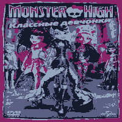
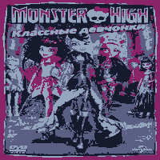
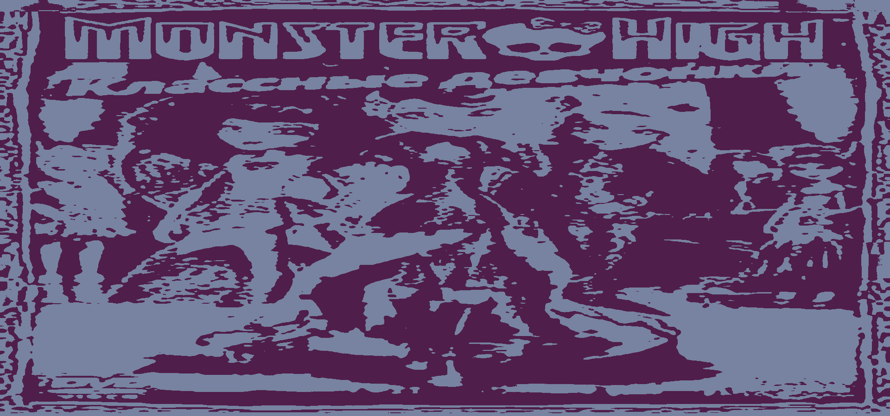
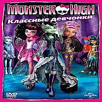
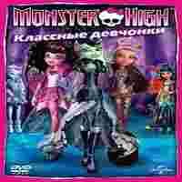
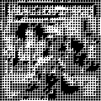

1. 200×200px, 4 кольори, без прозорості
Повноколірне растрове у індекс-палітру зі збереженням 4 кольорів різних за світлотою. Зберігається контраст світлого і темного, форма елементів.
Повноколірне растрове у індекс-палітру зі збереженням 4 кольорів різних за світлотою. Зберігається контраст світлого і темного, форма елементів.
Повноколірне растрове у індекс-палітру зі збереженням 9-ти кольорів та з наявністю прозорої частини зображення. Пляма прозорості має розпушені кордони (використано розпушення).
Повноколірне растрове у індекс-палітру зі збереженням 2 кольорів наближених за тоном, що утворюють один рівень сприйняття.
Повноколірне растрове у повноколірне якісне зі збереженням якості із різними рівнями прозорості.
Повноколірне растрове у повноколірне якісне зі збереженням якості графічних інженерних ліній у кресленні або графіку.
Повноколірне растрове у повноколірне неякісне без збереження якості до чіткого перегляду артефактів.
Переведено зображення у бітове (чорний та білий колір) з обраним видом растрової точки (квадратна) зі збереженням впізнаваності елементів.
